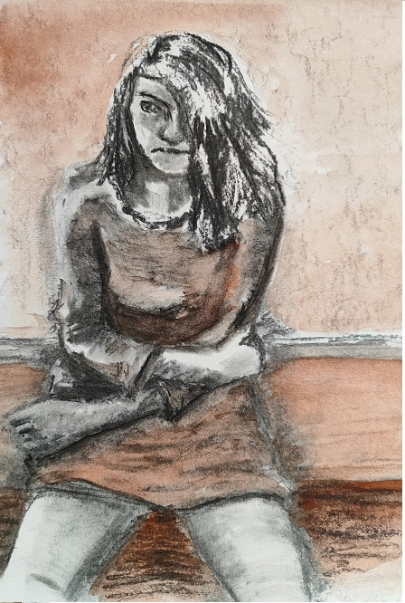
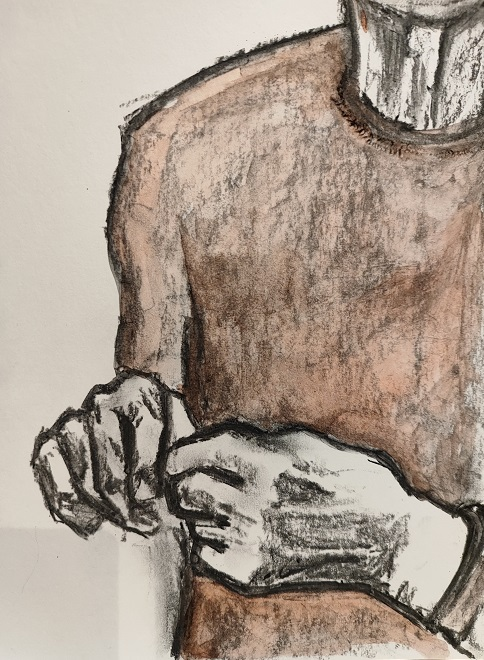
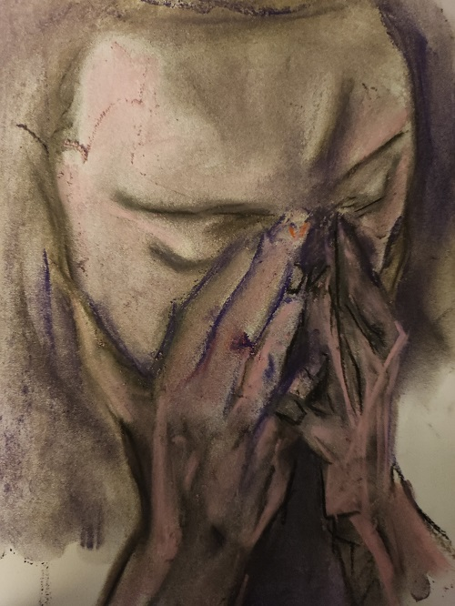
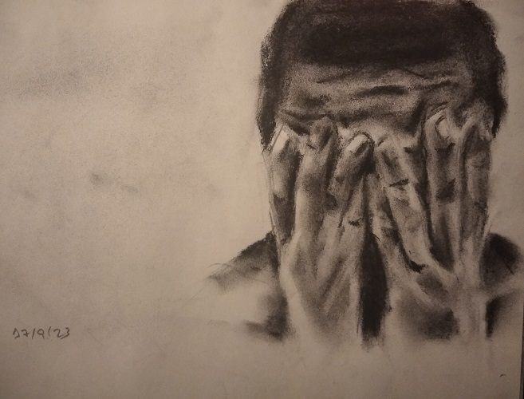
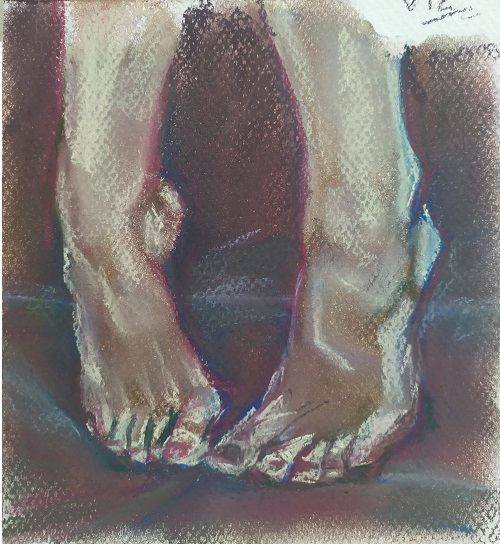
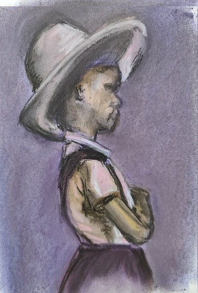

“El gesto indebido I” – Carbon y acuarela sobre papel – 210×297 mm

“El gesto indebido II” – Carbon y acualela sobre papel – 210×297 mm

“El gesto indebido III” – Carbon y pastel sobre papel – 210×297 mm

“El gesto indebido IV” – Carboncillo sobre papel – 210×297 mm

“Retrato interior” – Pastel sobre papel – 210×297 mm

“Sin Consuelo” – Pastel sobre papel – 210×297 mm Inspirado en la fotógrafa Consuelo Kanaga